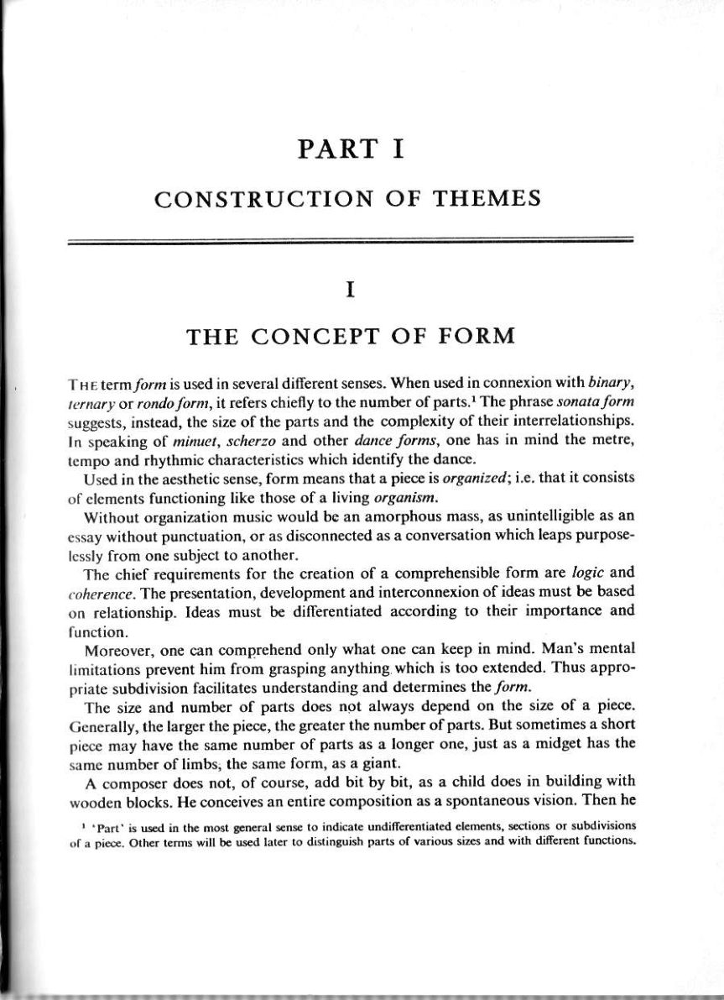
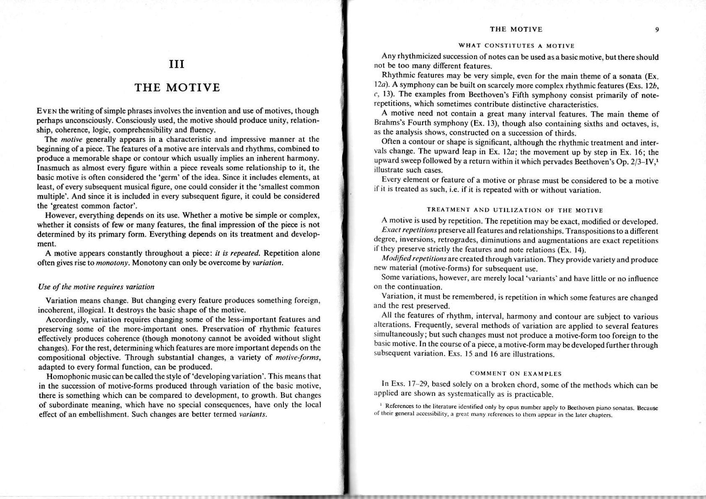

Arnold Schoenberg, Fundamentals of Musical Composition
从 form、phrase、motive 与 sentence 出发，强调材料关系如何生成形式，再进入小三部、变奏、回旋与奏鸣。
页码为 PDF 物理页。以下仅收录理论手册与案例实际引用的页面；页图保留整版，OCR 文本用于检索，不能替代读谱。
PDF p.11
Schoenberg
OCR 检索文本（仅辅助检索，谱例以影印为准）
PARTI CONSTRUCTIONOFTHEMES I THECONCEPTOFFORM THEtermformisused inseveral differentsenses.Whenusedinconnexionwithbinary, lernaryorrondoform,itreferschieflytothenumberofparts.Thephrasesonataform suggestsinstead,thesizeoftheparts andthe complexityoftheirinterrelationships. In speaking ofmimuet,scherzo and other danceforms,onehasin mind the metre, tempoandrhythmiccharacteristicswhichidentifythedance. Usedin the aestheticsense,formmeans thatapieceisorganized;i.e.that it consists ofelementsfunctioninglikethoseofalivingorganism. Without organizationmusicwouldbeanamorphousmass,asunintelligible asan essaywithoutpunctuation,orasdisconnected asaconversationwhichleapspurpose- lesslyfrom one subject toanother. Thechiefrequirementsfor the creation ofacomprehensibleformare logicand coherence.Thepresentation,development and interconnexionofideasmustbebased onrelationship.Ideasmustbedifferentiatedaccording to theirimportance and function. limitations prevent himfromgrasping anything.which is too extended.Thus appro- priatesubdivisionfacilitatesunderstandinganddeterminestheform. The size andnumber ofparts doesnot always dependon the sizeofapiece. Generally,thelargerthepiece,thegreaterthenumberofparts.Butsometimesashort piecemay have the same number ofparts as alonger one,just as a midget has the samenumber of limbs,the same form,as agiant. Acomposerdoesnot,ofcourse,addbit bybit,asachild doesinbuildingwith wooden blocks.Heconceives an entirecomposition as a spontaneous vision.Then he Partisusedinthemostgeneralsense toindicatundiferentiatedlmentsetionsorsubdivisins of a picce. Other terms will be used later to distinguish parts ofvarious sizes and with different functions.
PDF p.15
Schoenberg
OCR 检索文本（仅辅助检索，谱例以影印为准）
THE MOTIVE WHATCONSTITUTESAMOTIVE Anyrhythmicizedsuccessionofnotescanbeused asabasicmotive,butthereshould III notbe too many differentfeatures. Rhythmicfeatures may bevery simple,even for themain theme ofasonata(Ex. 12a).Asymphony canbebuilt on scarcely more complex rhythmicfeatures(Exs.12b, THEMOTIVE c,13).The examples from Beethoven'sFifth symphony consist primarily ofnote- repetitions,which sometimes contributedistinctive characteristics. EvENthewritingofsimplephrasesinvolvestheinventionanduseofmotives,though Amotive neednot contain a greatmanyinterval features.The main theme of perhapsunconsciously.Consciouslyused,themotiveshouldproduceunity,relation- BrahmssFourth symphony(Ex.13),though also containing sixths and octaves,is, ship,coherence,logic,comprehensibility and fluency. as the analysisshows,constructed on a succession of thirds. Themotive generally appears inacharacteristicandimpressivemannerat the Oftenacontour orshapeissignificant,althoughtherhythmic treatmentandinter- beginningofapiece.Thefeaturesofamotiveareintervalsandrhythms,combined to vals change.The upward leap in Ex.12a;the movement up by step inEx.16；the produce amemorable shape or contourwhich usually implies an inherent harmony. upward sweepfollowedbyareturnwithin it whichpervadesBeethoven's Op.2/3-IV, illustrate such cases. basicmotive isoften considered thegerm’of the idea.Since it includeselements,at Everyelement orfeatureofamotiveorphrasemustbeconsideredtobeamotive least,ofeverysubsequentmusicalfigure,onecould considerit thesmallestcommon ifit is treatedassuch,i.e.ifit isrepeatedwith orwithoutvariation. multiple'.And sinceitisincludedinevery subsequentfigure,itcouldbeconsidered the'greatestcommonfactor'. TREATMENT ANDUTILIZATION OF THE MOTIVE However,everythingdepends onitsuse.Whether amotivebe simple orcomplex, Amotiveisusedbyrpetition.Therepetitionmaybexactmodiedordevelopd. whetheritconsistsoffewormanyfeatures,thefinalimpressionofthepieceisnot Exactrepetitionspreserveallfeaturesandrelationships.Transpositionstoadifferent determinedbyitsprimaryform.Everythingdependsonitstreatmentanddevelop- degree,inversions,retrogrades,diminutionsandaugmentationsareexactrepetitions ment. if theypreserve strictly thefeatures andnoterelations(Ex.14). Amotive appears constantly throughout apiece:it is repeated.Repetition alone Modifiedrepetitionsarecreatedthroughvariation.Theyprovidevarietyandproduce oftengivesrisetomonotony.Monotonycanonlybeovercomebyvariation. new material(motive-forms)forsubsequentuse. Somevariations,however,aremerelylocalvariantsandhavelittleornoinfluence Useofthemotiverequiresvariation on the continuation. Variation,itmustberemembered,isrepetitioninwhichsomefeaturesarechanged and therestpreserved. incoherent,illogical.It destroys thebasicshape of themotive. All thefeaturesofrhythm,interval,harmony andcontouraresubjecttovarious Accordingly,variationrequires changing some of theless-importantfeatures and alterations.Frequently,severalmethodsofvariation are appliedtoseveralfeatures preservingsomeofthemore-importantones.Preservation ofrhythmicfeatures simultaneously;but suchchangesmustnot producea motive-formtooforeign to the effectively produces coherence（thoughmonotony cannotbe avoidedwithout slight basicmotive.Inthecourseofapiece,amotive-formmaybedevelopedfurtherthrough changes).Fortherest,determiningwhichfeatures aremoreimportant dependson the subsequentvariation.Exs.15 and16 are illustrations. compositionalobjective.Through substantial changes,avarietyofmotive-forms, adapted toeveryformal function,can beproduced. Homophonicmusiccan becalled the styleof‘developingvariation.Thismeansthat COMMENTONEXAMPLES inthesuccessionofmotive-formsproducedthroughvariationofthebasicmotive, InExs.17-29,based solely on abroken chord,some of themethodswhich can be applied are shown assystematically asispracticable. thereissomethingwhichcanbecomparedtodevelopment,togrowth.Butchanges ofsubordinatemeaning,whichhave no special consequences,have only thelocal effectofanembellishment.Suchchangesarebettertermedvariants. of theirgeneralaccessibility，agreatmanyreferencestothemappearinthelaterchapters.